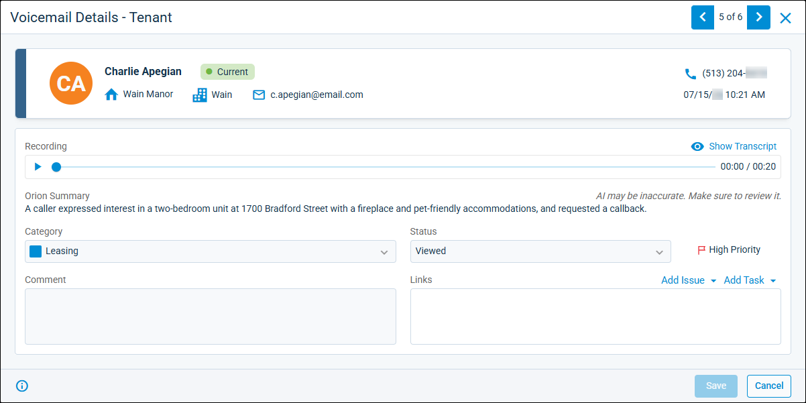

Source: https://rmxhelp.rentmanager.com/Topics/Express/CSH/Orion-Smart-Voicemails-Details.htm
Orion Smart Voicemail Details (Pop-Up)
The Smart Voicemails feature—powered by Orion AI—automatically transcribes, summaries, and categorizes voicemails from phone calls received through rmVoIP in Rent Manager. Orion AI organizes the voicemails by urgency and subject on the Smart Voicemails page. From there, users can access all voicemails they need to address and streamline the communication review process to save time and reduce missed issues or follow-ups. On the details page for a Smart Voicemail, users can access the call's audio recording, an Orion AI-generated brief summary or full transcription of the voicemail, link an issue or task, or edit the call's information.
Related Privileges
| Group | Privilege | Column |
|---|---|---|
| Phone System | Smart Voicemails | View |
For more information, refer to Control User Access.
More Information
This feature is licensed and must be purchased separately. For more information, contact your sales representative at sales@rentmanager.com.
To view a Smart Voicemail's details, go to  arrow_forward Communication arrow_forward Texting/Phone arrow_forward Smart Voicemails and select a voicemail from the list.
arrow_forward Communication arrow_forward Texting/Phone arrow_forward Smart Voicemails and select a voicemail from the list.

The top tile displays phone number associated with the voicemail and the date and time on which it was received, as well as the account linked to the phone number. If the voicemail is not linked to an account, select Add New Account to create a new account to associate with the call, or Link to Existing Account to link the call with an existing account in Rent Manager.
The following fields display on the pop-up:
| Field | Description |
|---|---|
|
Category |
The voicemail category that best identifies the type of call (Billing, Leasing, Maintenance, or Other). The voicemail is automatically categorized by Orion AI, but can be manually overridden by users. |
|
Comment |
An optional note providing additional information regarding the call. |
|
High Priority |
Click to flag the voicemail as high priority, indicating it needs to be addressed as soon as possible and/or with extra attention. The high priority flag displays on the Smart Voicemails page. |
|
Links |
If applicable, the issue(s) and/or task(s) created from this voicemail to address an issue or follow-up with an action. For more information, refer to Link Tasks and Issues to a Voicemail. |
|
Orion Summary |
A concise description of the voicemail recording generated by Orion AI. |
|
Recording |
The full audio recording of the voicemail. Click to play the audio. To view a full transcription of the recording generated by Orion AI, select |
|
Status |
The current stage of the voicemail (New, Addressed, or Viewed). |